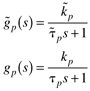
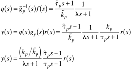
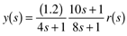
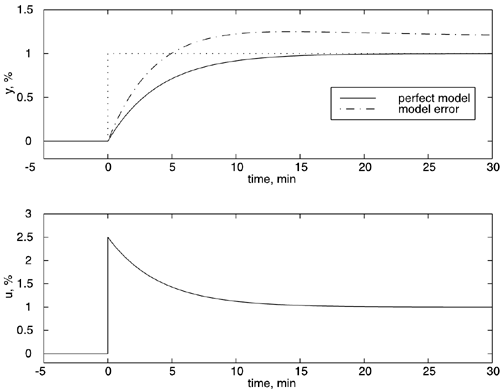

| [ Team LiB ] |
|
8.4 Model Uncertainty and DisturbancesThus far we have assumed that the model is perfect when designing the open-loop control system. In practice, it is impossible to have a perfect model. Often, the process gain can be off by 20–50% (or even more, for highly nonlinear processes). The next example shows the problems associated with a purely open-loop control strategy when there are uncertainties or disturbances. Example 8.4: First-Order Process with Model UncertaintyThe model and process are represented by the following transfer functions:  There are no noninvertible elements, so the control design procedure results in the following:  Notice that the response will be second order with numerator dynamics if the model is not perfect. Also, there will be offset when there is a step change in setpoint. Consider the following numerical example, where the model gain and time constant are 1 %/% and 10 minutes, respectively, but where the actual process has a gain of 1.2 %/% and a time constant of 8 minutes. If the tuning parameter, l = 4 minutes, the relationship between the setpoint and the output is  Whereas the response with a perfect model would be y(s) = r(s)/(4s+1). The response with model uncertainty is compared with the perfect model response in Figure 8-7 for a unit step change in setpoint. The manipulated input value is the same whether the process model is perfect or in error, since there is no feedback from the measured output to correct for this error. Figure 8-7. Comparison of open-loop controller responses. Some form of feedback is needed to correct for model uncertainty (as well as any disturbances entering the process). The method that we develop to account for model uncertainty and disturbances is known as internal model control (IMC). In the next section, we begin to develop the IMC structure. |
| [ Team LiB ] |
|